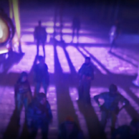
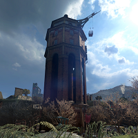
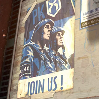

Neznámý poutník se dostal přes stěny do města
Neznámý infikovaný poutník bez biomarkeru se dostal do
města a vtrhl do Bazaaru, kde ohrožoval svou prezencí občany,
jelikož se začal proměňovat v zombie. Občané zvolili k jeho
popravě, zachránil ho avšak z neznámeho důvodu Hakon.
Konflikt o vodárenskou věž nemá konce
Konflikt o vodárenskou věž mezi Přeživšími a Mírotvorci je stále v pohybu.
Vodní nádrž obou frakcí klesá víc a víc. Jestli se tento konflikt nevyřeší co nejdřív, tak začnou lidé umírat žízní.


Poručík Mírotvorců byl zavražděn
Poručík Mírotvorců, Lucas, byl nedávno zavražděn v Bazaaru.
Na seznamu podezřelých jsou všichni Přeživší. Dokuď se nenajde Lucasův vrah, tak bude tunel mezi Starým Villedorem
a Centrálním Loopem uzavřen.